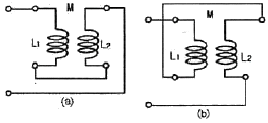
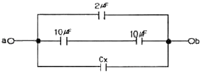
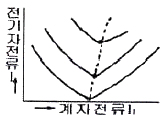
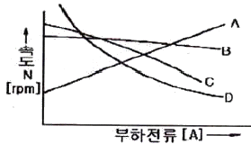
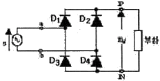
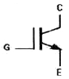
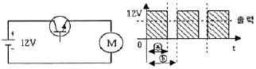

전기기능사 (2010-01-31 기출문제)
1과목: 전기 이론
1. 그림과 같은 회로를 고주파 브리지로 인덕턴스를 측정하였더니 그림(a)는 40[mH], 그림(b)는 24[mH]이었다. 이 회로상의 상호 인덕턴스 M은?

- 2[mH]
- 4[mH]
- 6[mH]
- 8[mH]
(정답률: 56%)

2. 길이 1m인 도선의 저항값이 20Ω이었다. 이 도선을 고르게 2m로 늘렸을 때 저항값은?(오류 신고가 접수된 문제입니다. 반드시 정답과 해설을 확인하시기 바랍니다.)
- 10[Ω]
- 40[Ω]
- 80[Ω]
- 140[Ω]
(정답률: 12%)
3. 어떤 회로에 v = 200 sin ωt의 전압을 가했더니 i = 50 sin(ωt + π/2)의 전류가 흘렀다. 이 회로는?
- 저항회로
- 유도성회로
- 용량성회로
- 임피던스회로
(정답률: 49%)
4. 전하 및 전기력에 대한 설명으로 틀린 것은?
- 전하에 양(+)전하와 음(-) 전하가 있다.
- 비유전율이 큰 물질일수록 전기력은 커진다.
- 대전체의 전하를 없애려면 대전체와 대지를 도선으로 연결하면 된다.
- 두 전하사이에 작용하는 전기력은 전하의 크기에 비례하고 두 전하 사이의 거리의 제곱에 반비례 한다.
(정답률: 57%)
5. 공기 중에서 자속밀도 2Wb/㎡의 평등 자계 내에서 5A의 전류가 흐르고 있는 길이 60㎝의 직선 도체를 자계의 방향에 대하여 60°의 각을 이루도록 놓았을 때 이 도체에 작용하는 힘은?
- 약 1.7[N]
- 약 3.2[N]
- 약 5.2[N]
- 약 8.6[N]
(정답률: 58%)
6. R=4Ω, X=3Ω인 R-L-C 직렬회로에 5A의 전류가 흘렀다면 이때의 전압은?
- 15[V]
- 20[V]
- 25[V]
- 125[V]
(정답률: 66%)
7. R=10[Ω], C=220[㎌]의 병렬 회로에 f=60[Hz], V=100[V]의 사인파 전압을 가할 때 저항 R에 흐르는 전류[A]는?
- 0.45[A]
- 6[A]
- 10[A]
- 22[A]
(정답률: 55%)
8. 주위온도 0℃에서의 저항이 20Ω인 연동선이 있다. 주위 온도가 50℃로 되는 경우 저항은?(단. 0℃에서 연동선의 온도계수는 a0 = 4.3 × 10-3이다.)
- 약 22.3[Ω]
- 약 23.3[Ω]
- 약 24.3[Ω]
- 약 25.3[Ω]
(정답률: 95%)
9. 대칭 3상 교류를 올바르게 설명한 것은?
- 3상의 크기 및 주파수가 같고 상차가 60°의 간격을 가진 교류
- 3상의 크기 및 주파수가 각각 다르고 상차가 60°의 간격을 가진 교류
- 동시에 존재하는 3상의 크기 및 주파수가 같고 상차가 120°의 간격을 가진 교류
- 동시에 존재하는 3상의 크기 및 주파수가 같고 상차가 90°의 간격을 가진 교류
(정답률: 54%)
10. 길이 5㎝의 균일한 자로에 10회의 도선을 감고 1A의 전류를 흘릴 때 자로의 자장의 세기[AT/m]는?
- 5[AT/m]
- 50[AT/m]
- 200[AT/m]
- 500[AT/m]
(정답률: 44%)
11. 내부 저항이 0.1Ω인 전지 10개를 병렬 연결하면, 전체 내부 저항은?
- 0.01[Ω]
- 0.⑤[Ω]
- 0.1[Ω]
- 1[Ω]
(정답률: 63%)
12. 그림에서 a-b간의 합성 정전 용량은 10[㎌]이다. Cx의 정전용량은?

- 3[㎌]
- 4[㎌]
- 5[㎌]
- 6[㎌]
(정답률: 59%)
13. 어느 회로 소자에 일정한 크기의 전압으로 주파수를 증가 시키면서 흐르는 전류를 관찰하였다. 주파수를 2배로 하였더니 전류의 크기가 2배로 되었다. 이 회로 소자는?
- 저항
- 코일
- 콘덴서
- 다이오드
(정답률: 50%)
14. 서로 다른 종류의 안티몬과 비스무트의 두 금속을 접속하여 여기에 전류를 통하면, 줄열 외에 그 접점에서 열의 발생 또는 흡수가 일어난다. 이와 같은 현상은?
- 제3금속의 법칙
- 제벡 효과
- 페르미 효과
- 펠티에 효과
(정답률: 74%)
15. 1[eV]는 몇 [J] 인가?
- 1.602 × 10-19[J]
- 1 × 10-10[J]
- 1[J]
- 1.16 × 104[J]
(정답률: 79%)
16. 용량이 250kVA인 단상 변압기 3대를 △결선으로 운전 중 1대가고장 나서 V결선으로 운전하는 경우 출력은 약 몇 [kVA]인가?
- 144[kVA]
- 353[kVA]
- 433[kVA]
- 525[kVA]
(정답률: 49%)
17. 히스테리시스 곡선의 (ㄱ)가로축(횡축)과 (ㄴ)세로축(종축)은 무엇을 나타내는가?
- (ㄱ) 자속 밀도, (ㄴ) 투자율
- (ㄱ) 자기장의 세기, (ㄴ) 자속 밀도
- (ㄱ) 자화의 세기, (ㄴ) 자기장의 세기
- (ㄱ) 자기장의 세기, (ㄴ) 투자율
(정답률: 71%)
18. pn 접합 다이오드의 대표적 응용 작용은?
- 증폭작용
- 발진작용
- 정류작용
- 변조작용
(정답률: 80%)
19. 플레밍의 왼손법칙에서 엄지손가락이 나타내는 것은?
- 자장
- 전류
- 힘
- 기전력
(정답률: 78%)
20. 비사인파 교류의 일반적인 구성이 아닌 것은?
- 기본파
- 직류분
- 고조파
- 삼각파
(정답률: 72%)
2과목: 전기 기기
21. Ns=1200[rpm], N=1176[rpm]일 때의 슬립은?
- 6[%]
- 5[%]
- 3[%]
- 2[%]
(정답률: 69%)
22. 보호 계전기를 동작 원리에 따라 구분할 때 입력된 전기량에 의한 전자력으로 회전 원판을 이동시켜 출력된값을 얻는 계기는?
- 유도형
- 정지형
- 디지털형
- 저항형
(정답률: 65%)
23. 그림은 동기기의 위상 특성 곡선을 나타낸 것이다. 전기자전류가 가장 작게 흐를 때의 역률은?

- 1
- 0.9[진상]
- 0.9[지상]
- 0
(정답률: 59%)
24. 다음 그림에서 직류 분권전동기의 속도특성 곡선은?

- A
- B
- C
- D
(정답률: 54%)
25. 다음 중 토크(회전력)의 단위는?
- [rpm]
- [W]
- [Nㆍm]
- [N]
(정답률: 58%)
26. 직류 발전기의 전기자 반작용의 영향이 아닌 것은?
- 절연 내력의 저하
- 유도 기전력의 저하
- 중성축의 이동
- 자속의 감소
(정답률: 44%)
27. 분권 발전기의 회전 방향을 반대로 하면?
- 전압이 유기된다.
- 발전기가 소손된다.
- 고전압이 발생한다.
- 잔류 자기가 소멸된다.
(정답률: 47%)
28. 1차 전압 13200V, 무부하 전류 0.2A, 철손 100W일 때 여자 어드미턴스는 약 몇 [℧] 인가?
- 1.5 × 10-5[℧]
- 3 × 10-5[℧]
- 1.5 × 10-3[℧]
- 3 × 10-3[℧]
(정답률: 15%)
29. 변압기 내부 고장 보호에 쓰이는 계전기로써 가장 알맞은 것은?
- 차동계전기
- 접지계전기
- 과전류계전기
- 역상계전기
(정답률: 65%)
30. 동기임피던스 5Ω인 2대의 3상 동기 발전기의 유도 기전력에 100V의 전압 차이가 있다면 무효 순환 전류는?
- 10[A]
- 15[A]
- 20[A]
- 25[A]
(정답률: 49%)
31. 동기 전동기 전기자 반작용에대한 설명이다. 공급전압에 대한 앞선 전류의 전기자 반작용은?
- 감자 작용
- 증자 작용
- 교자 자화 작용
- 편자 작용
(정답률: 49%)
32. 변압기에서 퍼센트 저항강하 3%, 리액턴스 강하 4%일 때 역률 0.8(지상)에서의 전압변동률은?
- 2.4[%]
- 3.6[%]
- 4.8[%]
- 6.0[%]
(정답률: 60%)
33. 동기 전동기의 자기 기동에서 계자 권선을 단락하는 이유는?
- 기동이 쉽다.
- 기동 권선으로 이용한다.
- 고전압이 유도된다.
- 전기자 반작용을 방지한다.
(정답률: 35%)
34. 출력 10kW, 효율 80%인 기기의 손실은 약 몇 [kW]인가?
- 0.6[kW]
- 1.1[kW]
- 2.0[kW]
- 2.5[kW]
(정답률: 28%)
35. 접지의 목적과 거리가 먼 것은?
- 감전의 방지
- 전로의 대지 전압의 상승
- 보호 계전기의 동작 확보
- 이상 전압의 억제
(정답률: 64%)
36. 변압기의 부하전류 및 전압이 일정하고 주파수만 낮아지면?
- 철손이 증가한다.
- 동손이 증가한다.
- 철손이 감소한다.
- 동손이 감소한다.
(정답률: 48%)
37. 다음 그림에 대한 설명으로 틀린 것은?

- 브리지(bridge) 회로라고도 한다.
- 실제의 정류기로 널리 사용한다.
- 전체 한 주기 파형 중 절반만 사용한다.
- 전파 정류회로라고도 한다.
(정답률: 53%)
38. 다음 그림과 같은 기호의 소자 명칭은?

- SCR
- TRIAC
- IGBT
- GTO
(정답률: 46%)
39. 단상 유도 전동기 중 (ㄱ)반발 기동형, (ㄴ)콘덴서 기동형, (ㄷ)분상 기동형, (ㄹ)셰이딩 코일형이라 할 때, 기동 토크가 큰 것부터 옳게 나열한 것은?
- (ㄱ) >(ㄴ) >(ㄷ) >(ㄹ)
- (ㄱ) >(ㄹ) >(ㄴ) >(ㄷ)
- (ㄱ) >(ㄷ) >(ㄹ) >(ㄴ)
- (ㄱ) >(ㄴ) >(ㄹ) >(ㄷ)
(정답률: 78%)
40. 그림은 직류전동기 속도제어 회로 및 트랜지스터의 스위칭 동작에 의하여 전동기에 가해진 전압의 그래프이다. 트랜지스터 도통 시간 ⓐ가 0.03초, 1주기 시간 ⓑ가 0.⑤초 일 때, 전동기에 가해지는 전압의 평균은?(단, 전동기의 역률은 1이고 트랜지스터의 전압강하는 무시한다.)

- 4.8[V]
- 6.0[V]
- 7.2[V]
- 8.0[V]
(정답률: 41%)
3과목: 전기 설비
41. 기중기로 200t의 하중을 1.5m/min의 속도로 권상할 때 소요되는 전동기 용량은?(단. 권상기의 효율은 70% 이다.)
- 약 35[kW]
- 약 50[kW]
- 약 70[kW]
- 약 75[kW]
(정답률: 43%)
42. 코일 주위에 전기적 특성이 큰 에폭시 수지를 고진공으로 침투시키고, 다시 그 주위를 기계적 강도가 큰 에폭시 수지로 몰딩한 변압기는?
- 건식 변압기
- 유입 변압기
- 몰드 변압기
- 타이 변압기
(정답률: 68%)
43. 부식성 가스 등이 있는 장소에 시설할 수 없는 배선은?
- 금속관 배선
- 제1종 금속제 가요전선관 배선
- 케이블 배선
- 캡타이어 케이블 배선
(정답률: 50%)
44. 가공 전선로의 지지물에 시설하는 지선에 연선을 사용할 경우 소선수는 몇 가닥 이상이어야 하는가?
- 3가닥
- 5가닥
- 7가닥
- 9가닥
(정답률: 55%)
45. 상설 공연장에 사용하는 저압 전기설비 중 이동전선의 사용전압은 몇 [V] 미만이어야 하는가?
- 100[V]
- 200[V]
- 400[V]
- 600[V]
(정답률: 76%)
46. 저압 가공 인입선의 인입구에 사용하는 것은?
- 플로어 박스
- 링리듀서
- 엔트런스 캡
- 노말밴드
(정답률: 57%)
47. 다선식 옥내배선인 경우 중성선의 색별 표시는?(2021년 변경된 KEC 규정 적용됨)
- 적색
- 흑색
- 청색
- 황색
(정답률: 56%)
48. 전압을, 저압, 고압 및 특고압으로 구분할 때 교류에서 "저압"이란?(관련 규정 개정전 문제로 여기서는 기존 정답인 3번을 누르면 정답 처리됩니다. 자세한 내용은 해설을 참고하세요.)
- 100[V] 이하의 것
- 220[V] 이하의 것
- 600[V] 이하의 것
- 750[V] 이하의 것
(정답률: 57%)
49. 어미자와 아들자의 눈금을 이용하여 두께, 깊이, 안지름 및 바깥지름 측정용으로 사용하는 것은?
- 버니어 캘리퍼스
- 채널 지그
- 스트레인 게이지
- 스태핑 머신
(정답률: 71%)
50. 지선의 중간에 넣는 애자는?
- 저압 핀 애자
- 구형 애자
- 인류 애자
- 내장 애자
(정답률: 71%)
51. 역률개선의 효과로 볼 수 없는 것은?
- 감전사고 감소
- 전력손실 감소
- 전압강하 감소
- 설비 용량의 이용률 증가
(정답률: 56%)
52. 전선과 기구 단자 접속시 나사를 덜 죄었을 경우 발생할 수 있는 위험과 거리가 먼 것은?
- 누전
- 화재 위험
- 과열 발생
- 저항 감소
(정답률: 73%)
53. 폭연성 분진 또는 화약류의 분말이 전기설비가 발화원이 되어 폭발할 우려가 있는 곳에 시설하는 저압 옥내 전기 설비의 저압 옥내배선 공사는?
- 금속관 공사
- 합성수지관 공사
- 가요전선관 공사
- 애자 사용 공사
(정답률: 71%)
54. 금속 전선관을 구부릴 때 금속관의 단면이 심하게 변형되지 않도록 구부려야 하며, 일반적으로 그 안측의 반지름은 관 안지름의 몇 배 이상이 되어야 하는가?
- 2배
- 4배
- 6배
- 8배
(정답률: 75%)
55. 진동이 심한 전기 기계ㆍ기구에 전선을 접속할 때 사용되는 것은?
- 스프링 와셔
- 커플링
- 압착단자
- 링 솔리브
(정답률: 71%)
56. 연피케이블을 직접 매설식에 의하여 차량 기타 중량물의 압력을 받을 우려가 있는 장소에 시설하는 경우 매설 깊이는 몇 [m] 이상이어야 하는가?(2021년 변경된 규정 적용)
- 0.6[m]
- 1.0[m]
- 1.2[m]
- 1.6[m]
(정답률: 55%)
57. 가요전선관과 금속관의 상호 접속에 쓰이는 것은?
- 스프리트 커플링
- 콤비네이션 커플링
- 스트레이트 복스커넥터
- 앵클 복스커넥터
(정답률: 70%)
58. 합성수지관을 새들 등으로 지지하는 경우 그 지점간의 거리는 몇 [m]이하로 하여야 하는가?
- 0.8[m]
- 1.0[m]
- 1.2[m]
- 1.5[m]
(정답률: 49%)
59. 배전용 기구인 COS(컷아웃스위치)의 용도로 알맞은 것은?
- 배전용 변압기의 1차측에 시설하여 변압기의 단락 보호용으로 쓰인다.
- 배전용 변압기의 2차측에 시설하여 변압기의 단락 보호용으로 쓰인다.
- 배전용 변압기의 1차측에 시설하여 배전 구역 전환용으로 쓰인다.
- 배전용 변압기의 2차측에 시설하여 배전 구역 전환용으로 쓰인다.
(정답률: 57%)
60. 전열전선을 동일 금속덕트 내에 넣을 경우 금속덕트의 크기는 전선의 피복절연물을 포함한 단면적의 총합계가 금속덕트 내 단면적의 몇 [%]이하가 되로고 선정하여야 하는가?(단, 제어회로 등의 배선에 사용하는 전선만 넣는 경우 이다.)
- 30%
- 40%
- 50%
- 60%
(정답률: 51%)
L = (R1R3 - R2R4) / (4π²f²M)
여기서 R1, R2, R3, R4는 각각 그림에서 주어진 저항값이고, f는 주파수입니다. M은 상호 인덕턴스이므로, 두 개의 인덕턴스를 측정한 값으로부터 계산할 수 있습니다.
40[mH] = (100Ω × 100Ω - R2 × 100Ω) / (4π² × 10kHz² × M)
24[mH] = (R1 × 100Ω - 100Ω × R4) / (4π² × 10kHz² × M)
위의 두 식을 풀면,
M = (100Ω × 100Ω - R2 × 100Ω) / (4π² × 10kHz² × 40[mH]) = (R1 × 100Ω - 100Ω × R4) / (4π² × 10kHz² × 24[mH])
두 식을 비교하면,
(100Ω × 100Ω - R2 × 100Ω) / 40[mH] = (R1 × 100Ω - 100Ω × R4) / 24[mH]
R2를 구하면,
R2 = (100Ω × 100Ω × 24[mH] - R1 × 100Ω × 40[mH] + 100Ω × R4 × 40[mH]) / (100Ω × 40[mH])
여기에 R1 = R4 = 100Ω을 대입하면,
R2 = 200Ω
따라서,
M = (100Ω × 100Ω - 200Ω × 100Ω) / (4π² × 10kHz² × 40[mH]) = 4[mH]
따라서 정답은 "4[mH]"입니다.